Variante D · Mischung aus A und C
Die ruhige Basis von Nordic Editorial mit vier bewusst gesetzten Details aus Dutch Detail. Haarlinien, Nummern, eine grüne Handlung, viel Luft. Dazu als Signatur: Bögen, das Ticket, der Kassenbon und die Hauskacheln.
Familjen Grotesk (UI) · Hedvig Letters Serif (Überschriften, Empfehlung) · Bree Serif als Alternative
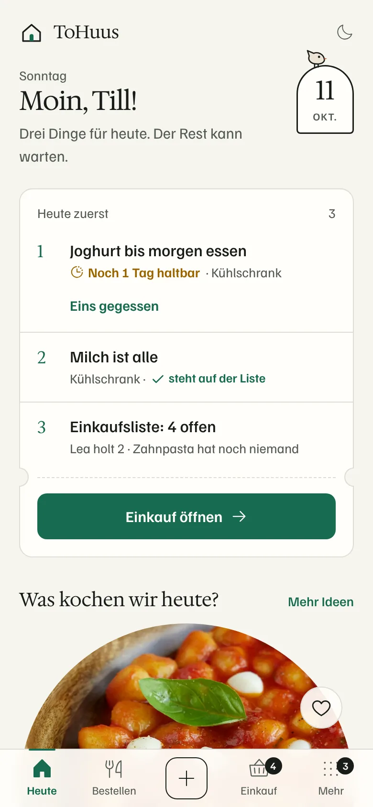
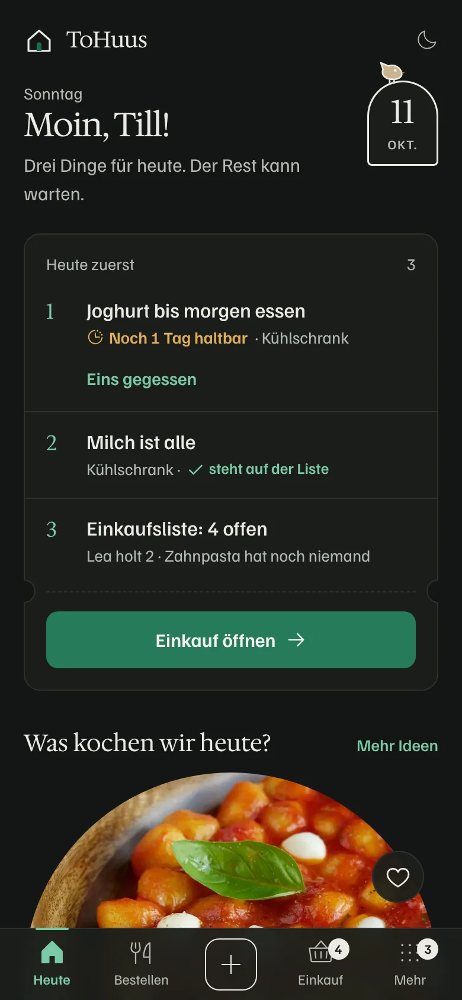
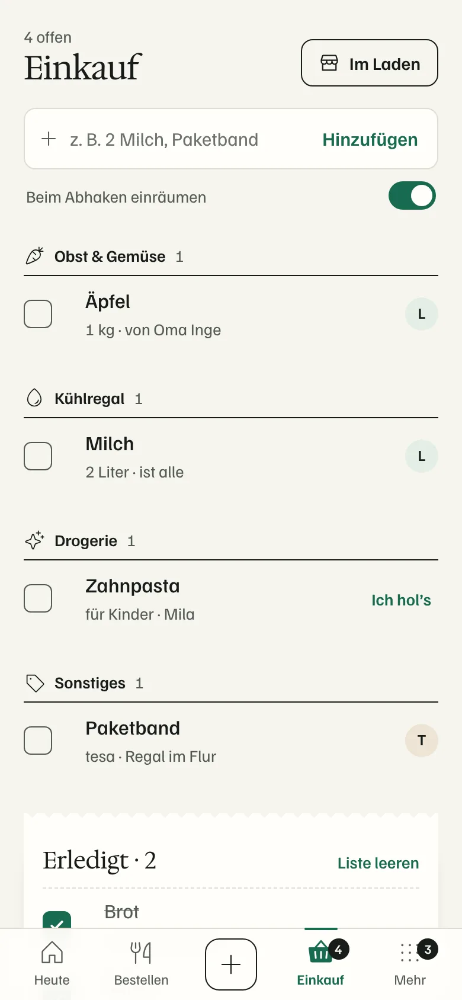
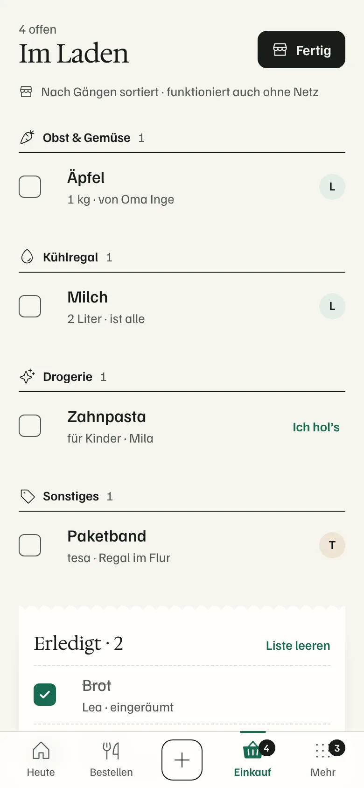
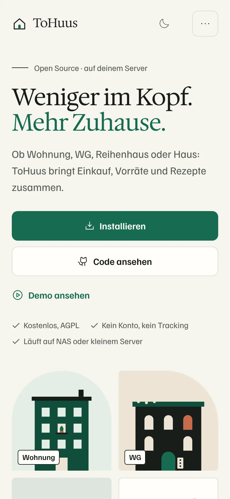
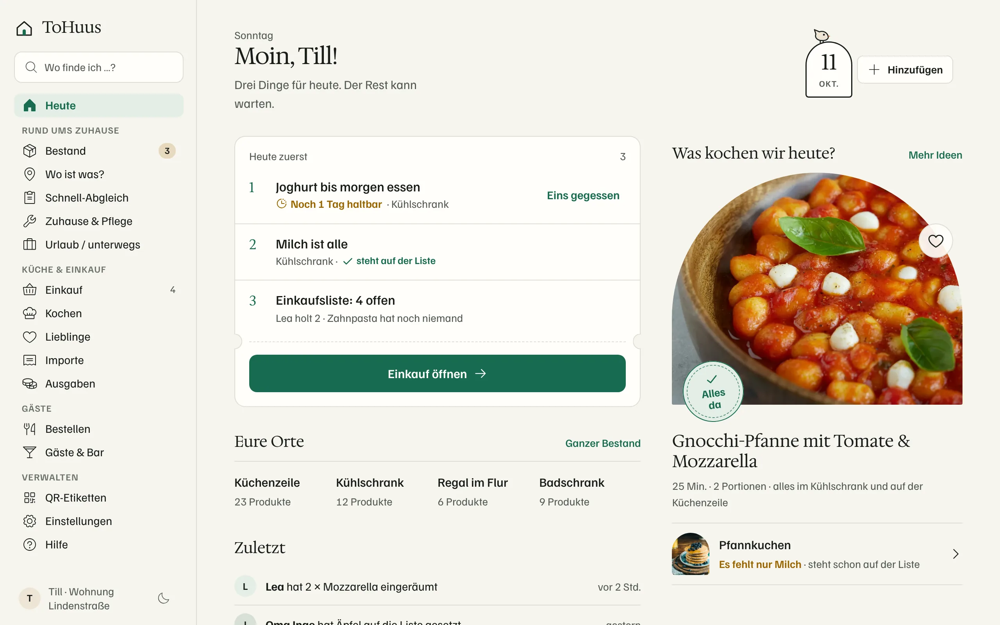
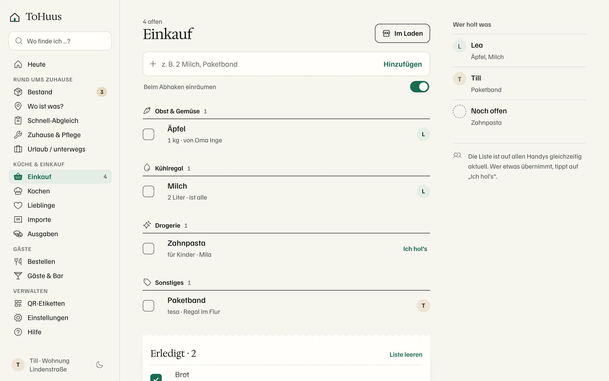
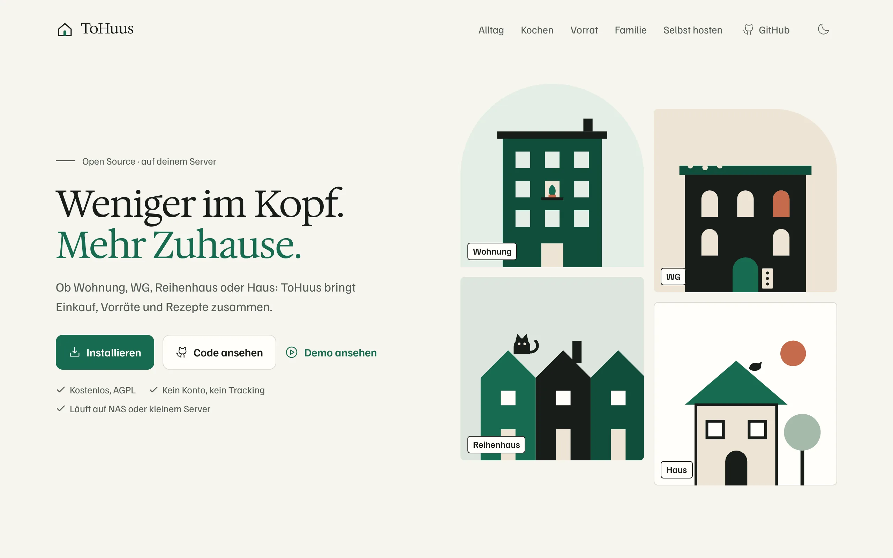
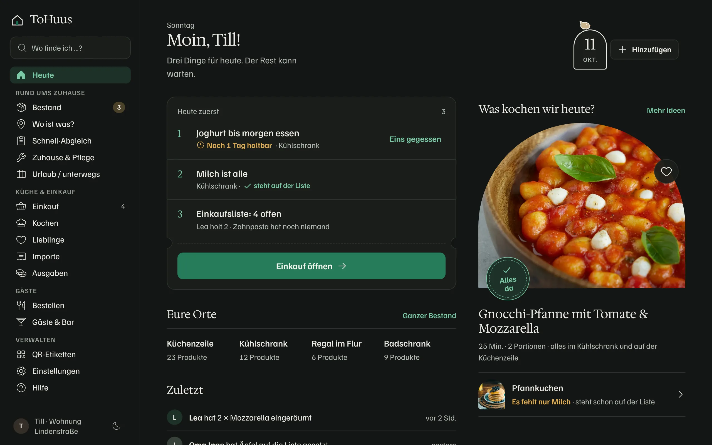
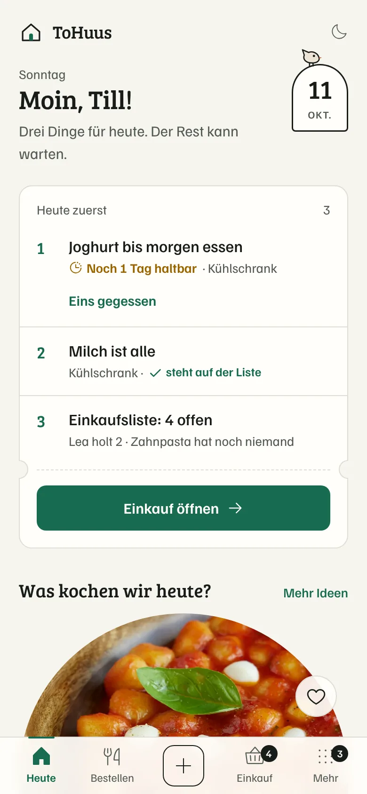
Empfehlung: Hedvig Letters Serif. Sie ist feiner und ruhiger als Bree und konkurriert nicht mit der fetten Grotesk der Bedienelemente. Damit bleibt die Hierarchie klar: Überschrift leise, Handlung deutlich. Ihre skandinavische, leicht kalligrafische Form passt zu den Bögen, dem Ticket und dem Stempel. Mit Bree werden genau diese Details schnell „niedlich“.
Der Preis: Hedvig hat nur einen Schnitt (400) und braucht mindestens rund 20 px. Darum nur für H1, Abschnitts- und Rezepttitel, Datum und Hero. Listen, Zahlen und Buttons bleiben in Familjen Grotesk.
Bree ist wärmer, robuster bei kleinen Größen und knüpft an A und B an. Wer es freundlicher will, kann tauschen: ?serif=bree.
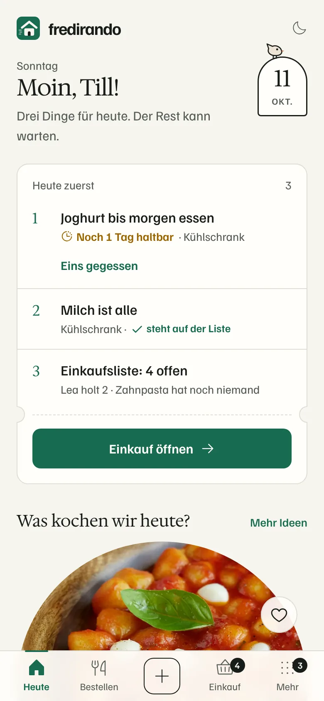
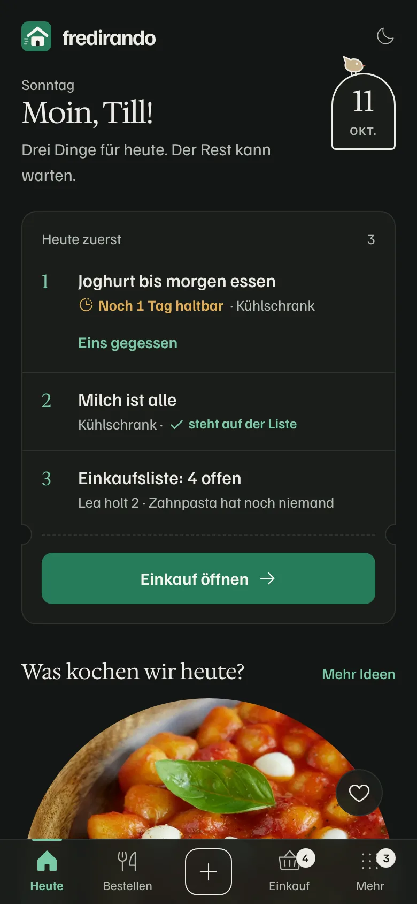
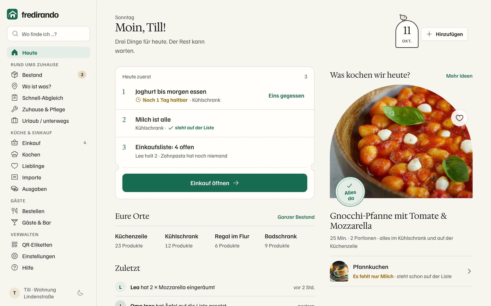
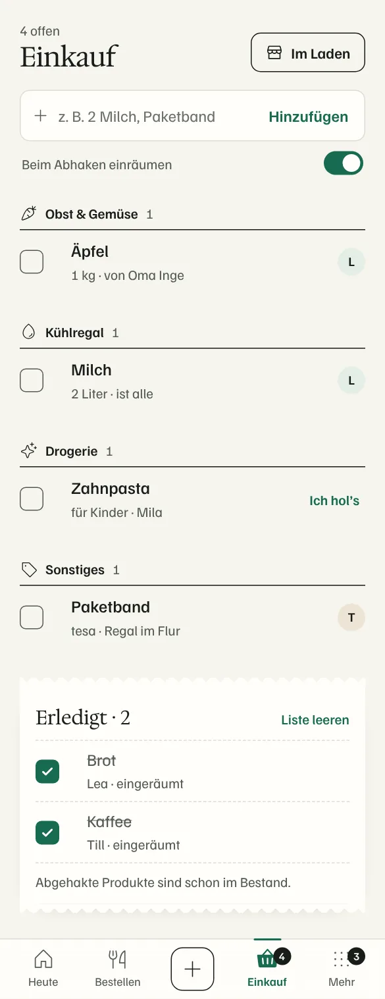
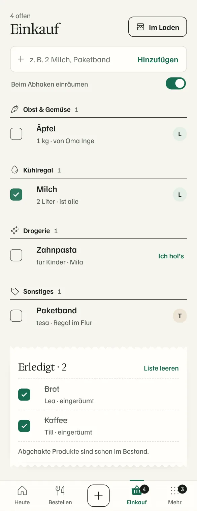
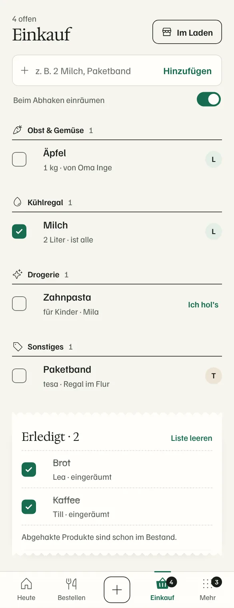
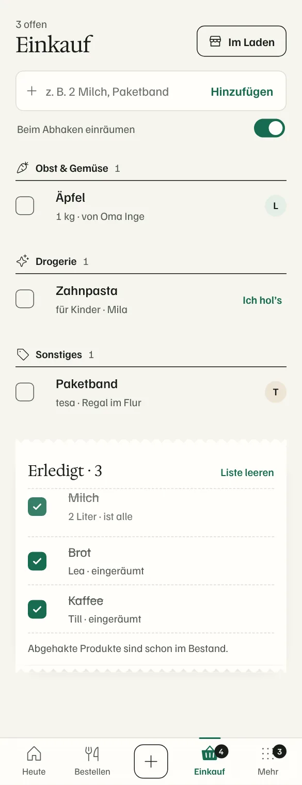
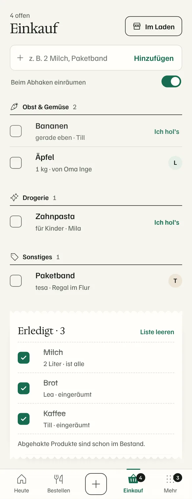
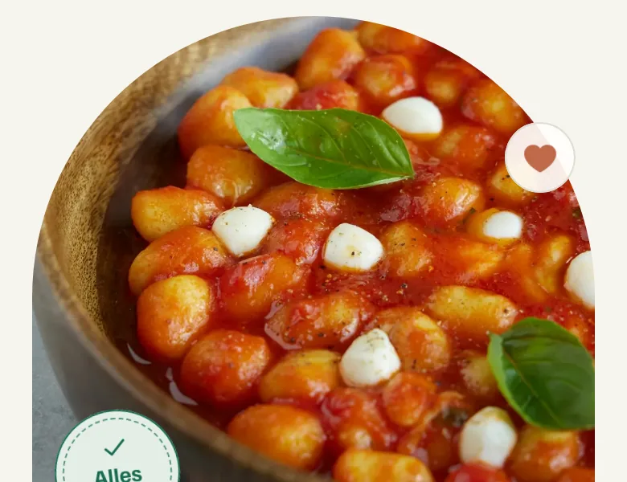